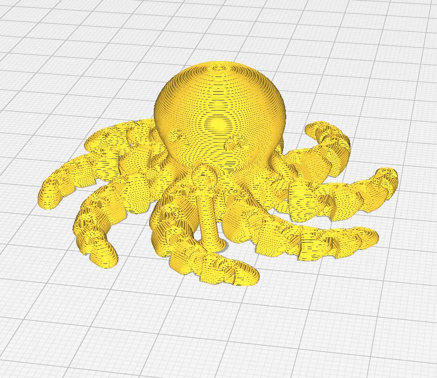
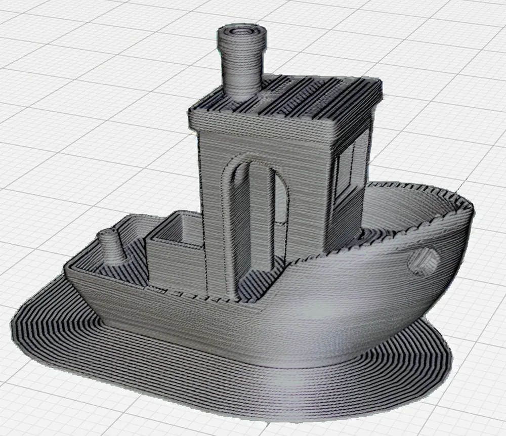
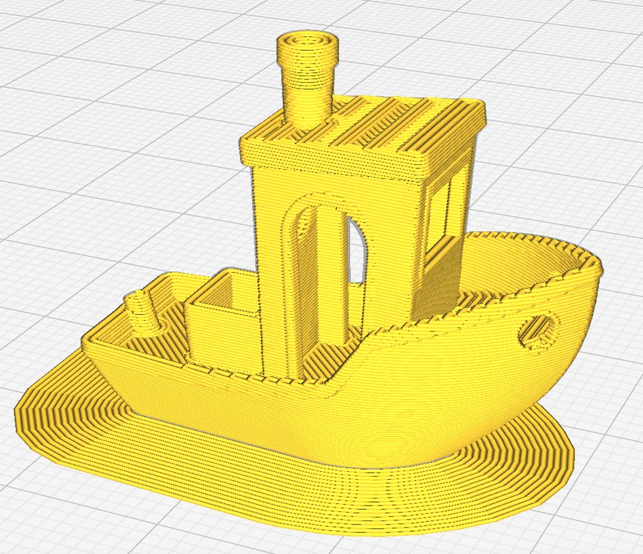
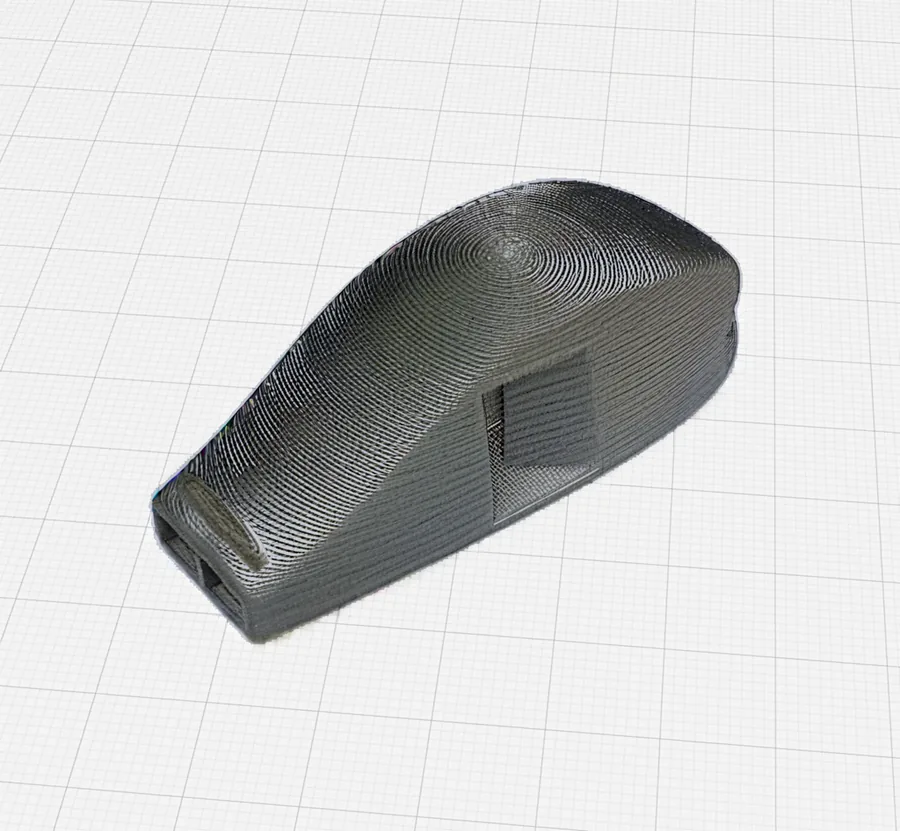
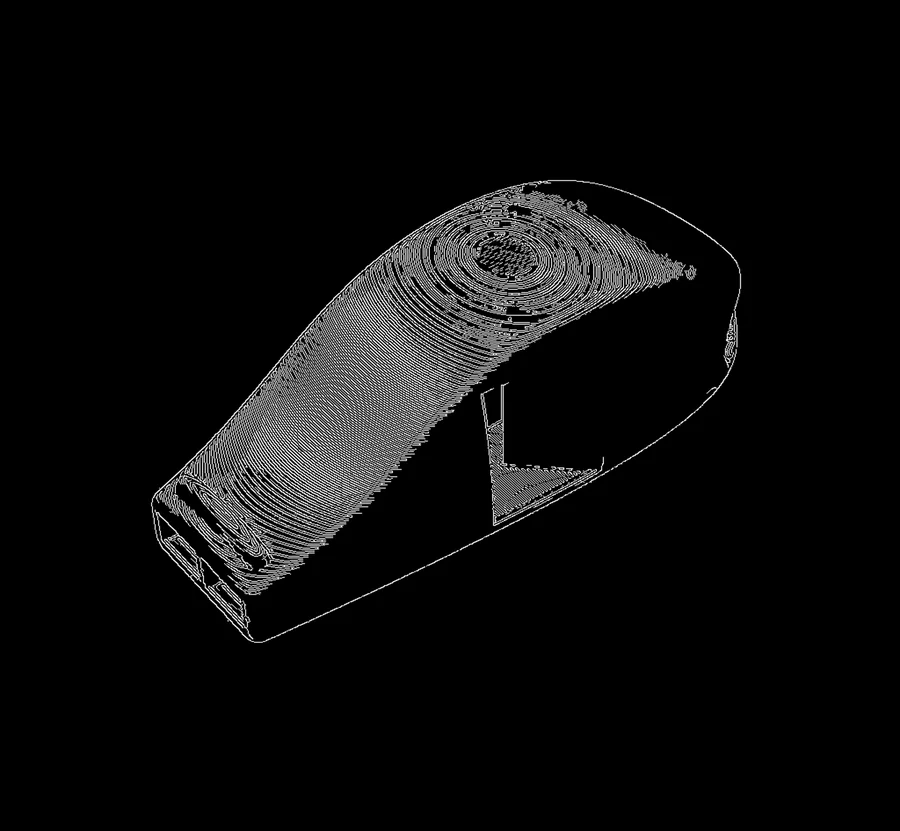
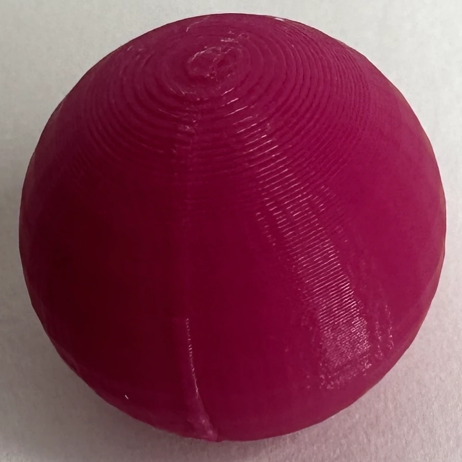
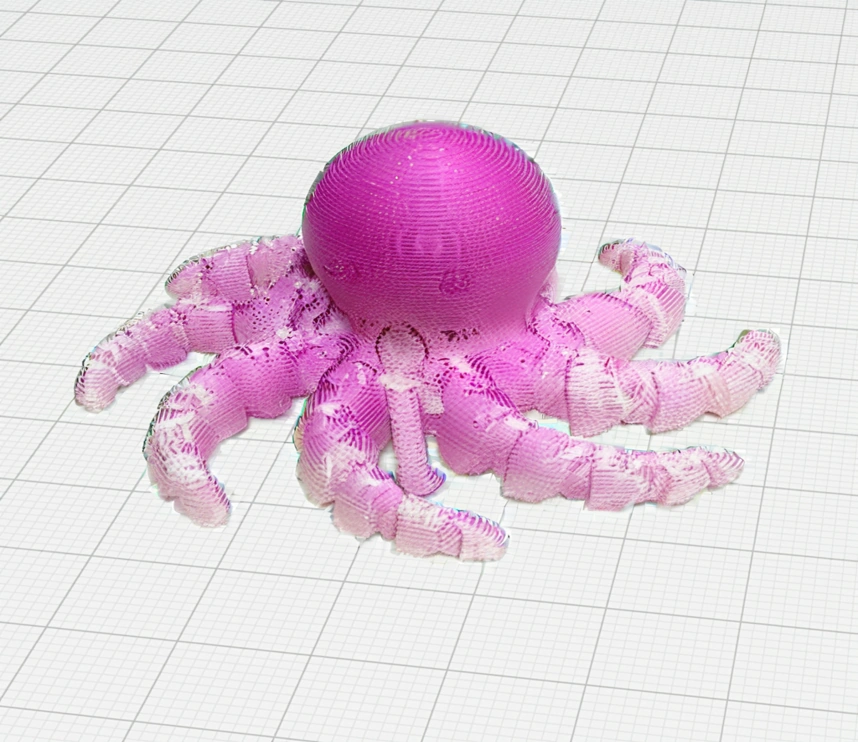
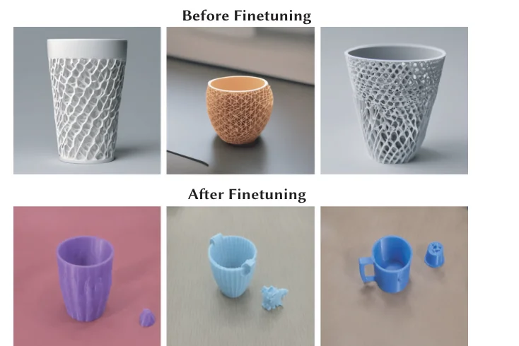

Slicer screenshotAbstract. Slicers show you how a printer will move, not what the result will look like: every part is drawn in the same flat yellow, whatever filament you load. VisiPrint closes that gap. Give it a screenshot of your sliced model from any slicer and a photo of the filament you plan to use, and it produces a preview of the print that keeps the slicing pattern (layer lines, seams, infill showing through) while taking on the colour, gloss, translucency and texture of the real material. In a user study, participants completed every preview task with VisiPrint within the time limit, compared with 63% using Cura and 13% using Blender.
This post walks through the intuition behind each stage of VisiPrint, with figures you can play with.
It takes a few shortcuts compared with the paper; the paper has the full treatment and the evaluation.
Figures marked live run the pipeline's own computation in your browser. Diffusion outputs were generated by the
released code on a GPU with default settings; the slicing figure can
re-run the real model on demand, and the full live demo is at the end.
- Why slicer previews mislead
- Two images in, one preview out
- Keeping the geometry: depth and adaptive edges
- Painting the material in: diffusion with an image prompt
- Getting the colour right
- Optional: teaching SDXL what prints look like
- Does it help people?
- Try it
1Why slicer previews mislead
Before a print, the only picture most people see is the slicer's. It is a faithful picture of the toolpaths, but the colours are a visualisation convention, not a prediction. Real filaments differ in ways that change how a part reads: a metallic filament catches highlights on every layer line, a translucent one lets the inside of the part show through, a dark matte one hides small features. These differences decide whether a print looks right, and today you find out only after the print is done.
Physically based rendering could in principle predict this, but it needs a 3D model of the material (a BRDF or a volumetric scattering model), careful lighting, and it does not reproduce the slicing pattern unless you also reconstruct every toolpath. VisiPrint takes a different route: treat the preview as an image-to-image problem, with the slicer screenshot carrying the geometry and slicing pattern and a photo carrying the material.
Drag to compare

⇆
Slicer (Cura)VisiPrint, silver PLA
2Two images in, one preview out
The inputs are deliberately simple so that VisiPrint works with any slicer: a screenshot of the sliced model, which fixes the shape, the viewpoint and the slicing pattern, and a material exemplar, a photo of something printed in the filament you want (a small sphere works well). The pipeline then prepares three kinds of guidance from the screenshot before any image is generated. Step through them below.
Object

Slicer screenshot3Keeping the geometry: depth and adaptive edges
A diffusion model will happily invent a nicer-looking boat. To stop it, VisiPrint conditions generation on two complementary signals through ControlNets. Depth carries the overall form, and on its own it produces smooth objects that have lost their layer lines. Edges carry exactly what makes a print look printed: the stack of layers, the seam, vents and holes. Neither is enough alone; together they keep the preview tied to the toolpaths.
The catch with edges is the threshold. Slicer screenshots vary a lot: a dark or low-contrast view gives weak gradients, while dense details and infill give too many. A fixed Canny threshold either loses the layer lines or drowns the image in noise. VisiPrint instead searches for a threshold. It measures gradient magnitudes inside the object, then bisects over percentiles of that distribution until the fraction of edge pixels inside the mask falls in a target band (12 to 25% by default).Outside the mask the image is filled with the median grey of the object first, so the silhouette itself does not count as a slicing edge.
Live · runs in your browser
Input (decoloured)
Adaptive edges
4Painting the material in: diffusion with an image prompt
With the guidance ready, VisiPrint repaints the decoloured object using Stable Diffusion XL in inpainting mode, so only the masked object changes and the build plate stays as it was in the screenshot. Two things steer the result. The material exemplar enters through an IP-Adapter: an image encoder turns the photo into tokens that the diffusion model attends to alongside the text prompt, so "what the material looks like" is specified by a picture rather than words. The depth and edge maps enter through two ControlNets, which constrain the layout at every denoising step. This material-transfer setup builds on ZeST2, adding the slicing (edge) guidance and the steps around it.
The text prompt is kept minimal on purpose: an image captioner (BLIP) names the object and the prompt becomes "A 3D printed noun".The captioner is not always right: it calls the vase a "dress" and the headphone stand "metal". The image prompt and the ControlNets do most of the work, so those previews still come out as a vase and a stand. Users can override it, but strong prompts trade away faithfulness to the slicer image, so the interface warns about this and exposes the prompt's weight against the image prompt.
The one control that matters most for printed parts is Slicing Influence, the weight on the edge ControlNet. Too low and the layer lines melt into a smooth, moulded-looking object; too high and the edges dominate the material.
Slicing influence

Slicing influence 0.8
Edge guidance
Live
5Getting the colour right
Diffusion models are good at texture and gloss but loose with exact colour: the generated pink is often a little too light or too saturated. VisiPrint finishes with a statistical colour transfer inside the object mask. For each RGB channel it matches the mean of the generated object to the mean of the exemplar, and moves the spread of values part of the way toward the exemplar's:
c′ = (c − μgen) · [1 + (σex/σgen − 1) · wlum] + μex,
out = (1 − wcol) · c + wcol · c′
The two weights are the interface's Color Influence (wcol, default 0.8) and Luminance Influence (wlum, default 0.6). Try them on a real, uncorrected output:
Live · runs in your browser

Exemplar
Before correctionAfter correction
6Optional: teaching SDXL what prints look like
Out of the box, SDXL's idea of "a 3D printed cup" is a glossy product render. VisiPrint optionally applies a small LoRA fine-tune trained on 100 Creative Commons photos of real 3D prints, which pulls the model toward the look of actual FDM parts: visible layers, filament sheen, imperfect surfaces. It is switched off by default and exposed as Use Fine-Tuned Model in the interface.

7Does it help people?
We compared VisiPrint with the two things people do today: inspecting the slicer preview (Cura) and building a render (Blender). Participants were asked to produce previews of how prints would look within a time limit.
Preview tasks completed within the time limit
VisiPrint previews appearance only. It does not judge printability, strength or tolerances, and a preview assumes lighting similar to the exemplar photo. Translucent filaments are the hardest case. For anything that matters, pair it with your slicer's checks and a small test print.
8Try it
The full interface from the paper runs below on a shared GPU. Pick an example and a material, or upload your own slicer screenshot and filament photo. Each preview takes about 10 to 15 seconds. Signed-out visitors get a few free previews per day; signing in to Hugging Face (free) gives more.